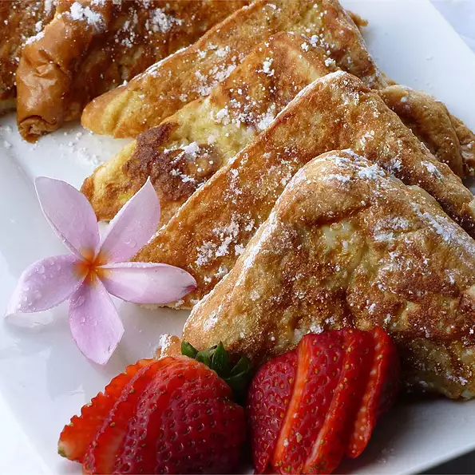

French Toast

About this recipe
Thick slices of sweet bread are the perfect base for this French toast recipe!
Ingredients
- 4 (1 inch thick) slices King's Hawaiian® Sweet Bread
- 4 large eggs
- ¼ cup milk
- ½ teaspoon vanilla
- ¼ teaspoon ground cinnamon
- 3 tablespoons butter, melted
- 2 tablespoons butter or oil for frying
- 1 teaspoon powdered sugar
- maple syrup to taste
Directions
- Slice bread crosswise so that each slice is about 1-inch thick. Cut larger slices into halves or thirds, if desired. Set aside.
- In a shallow mixing bowl, whisk together the eggs, milk, vanilla and cinnamon.
- Quickly dip slices (do not soak) in egg mixture and cook until golden brown on both sides. Keep egg mixture stirred and spices well blended.
- Sprinkle with powdered sugar and serve with warm maple syrup.